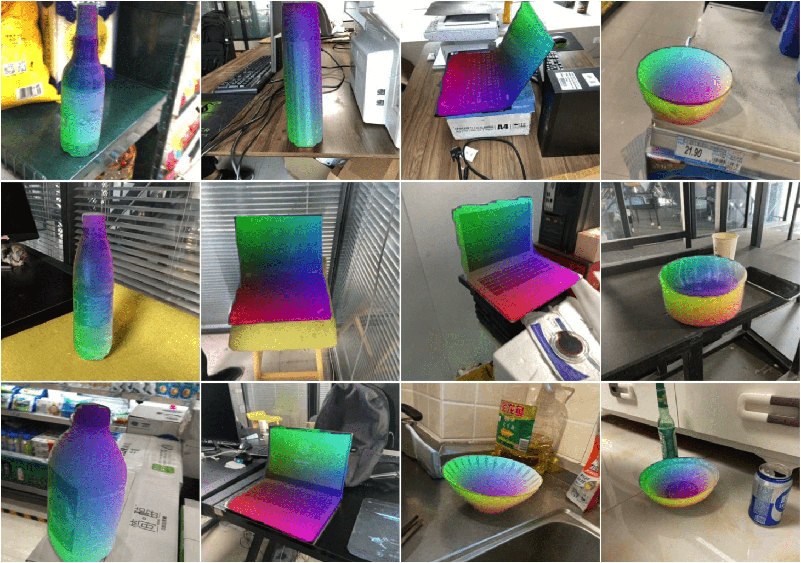

|
I am a first-year Ph.D. student in computer science at UIUC, advised by Prof. Yunzhu Li. Previously, I was an undergraduate student at Tsinghua University majoring in computer science (Yao class). Email / Google Scholar / Github / Twitter |
|
|
|  |
Kaifeng Zhang, Yang Fu, Shubhankar Borse, Hong Cai, Fatih Porikli, Xiaolong Wang International Conference on Learning Representations (ICLR), 2023. project page / arXiv / pdf / code We propose a self-supervised method for category-level 6D object pose estimation by learning dense 2D-3D geometric correspondences. Our method can train on in-the-wild RGB/RGBD image collections without any 3D annotations. |

|
Yingdong Hu, Renhao Wang, Kaifeng Zhang, Yang Gao European Conference on Computer Vision (ECCV), 2022 (Oral). arXiv / pdf / code We show that fine-grained features learned with low-level contrastive objectives are complementary to semantic features from image-level SSL methods. Fusing these features can significantly improve the performance for downstream tasks. |
|
Borrowed from Jon Barron |